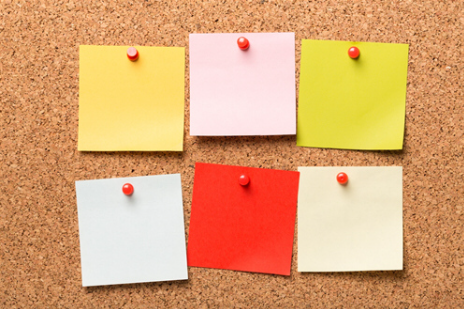

Save the date: Landelijke AD-dag 17 april 2026 locatie: Hanze - Groningen
Welkom bij het Overlegplatform Associate Degree
🎉 YESSSS! Het spel Pionieren! is er! Ervaar het perspectief van pioniersstudenten en ontdek hoe jij écht verschil kunt maken 🌟
Save the date: ‘Making Waves’ – samen bouwen aan impactmakerschap op niveau 5
Wat weet je over AD-opleidingen?
Hogescholen
Actuele Thema's
Op dit moment zijn een aantal thema’s actueel. Voor deze thema’s organiseert het platform werk- of projectgroepen.
Lees verder >>Opleidingsprofielen
In de LAdO’s wordt onder andere gewerkt aan het beschrijven van de opleidingsprofielen van de Ad-opleidingen.
Lees verder >>
Laatste Nieuws
Er is regelmatig nieuws te delen via deze website. Klik op de button "Lees verder" om de meest recente berichten te lezen.
Lees verder >>